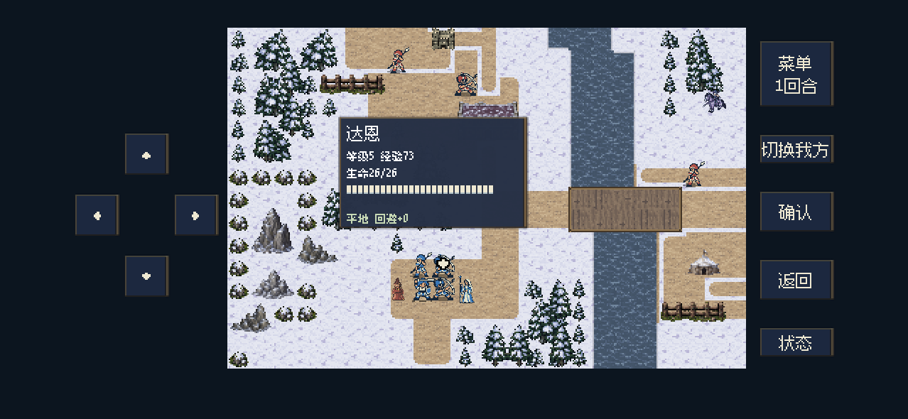
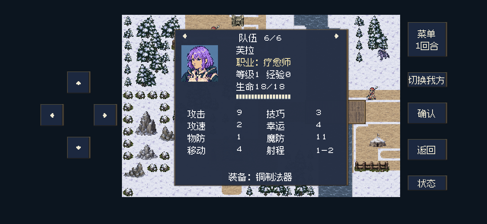
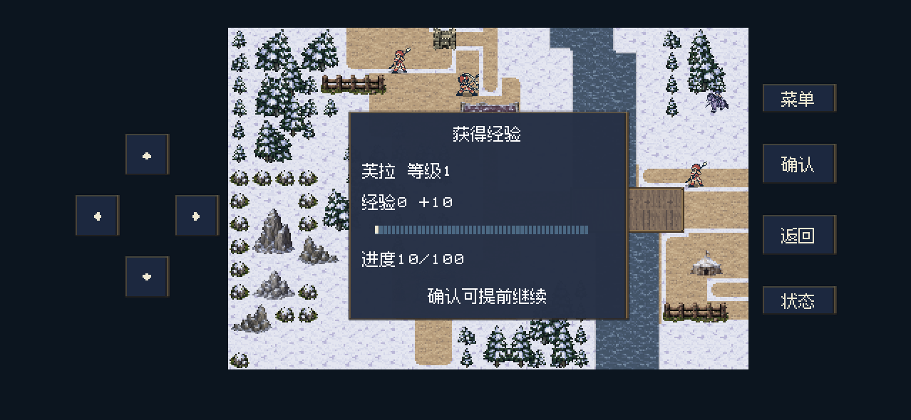
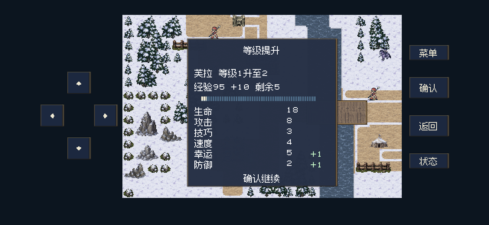
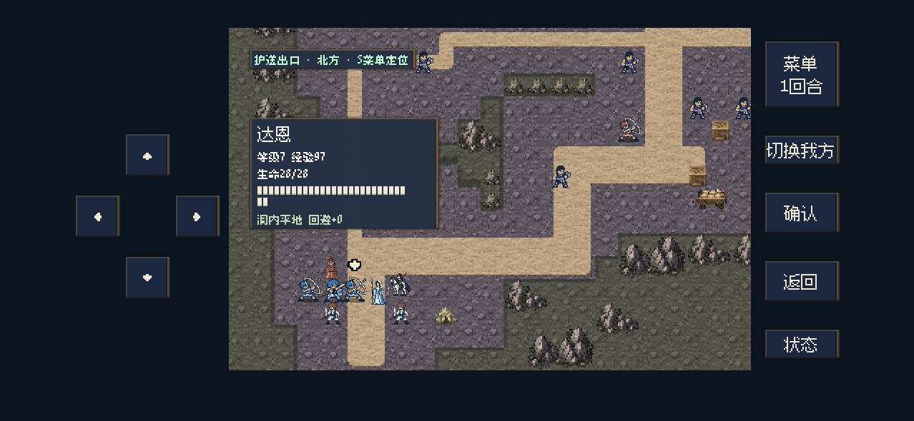

2026-10-27 · 修改后运行画面
地图箭头、当前职业与治疗经验
33项逻辑检查＋52项原生界面与流程检查通过
地图箭头保留原来的米白色与放大尺寸，增加黑色外轮廓；我方详情补充当前职业；有效治疗可以获得经验并正常升级。南岗押送所本次保留敌军等级和通关奖励。
阅读完整修改与经验分析 · 原生验证 · 实际经验分配
结论：只把普通敌人从1级改成2级，不会增加当前公式的经验。此前两次M13实测队伍合计490、448经验，主要问题是分配集中、治疗贡献没有直接经验，不宜再给全队统一加经验。
| 胡纳普等级 | 击杀普通士兵 | 士兵仅改2级 | 击杀本关骑兵 | 通关 |
|---|
| 5 | 13 | 13 | 70 | 7 |
| 6 | 11 | 11 | 60 | 6 |
本作新增治疗经验使用原职业／等级倍率、行动基础价值10：疗愈师1—2级每次10，5级7，6级6。FC原版白魔法不直接给经验，此处明确属于本作按用户要求新增的规则；群疗每次施法只结算一次，满血空放和被动回血不计入。
雪地地图：地图箭头保留原像素形状，中心不变，放大并增加黑色外轮廓。
我方详情：姓名下显示当前职业。芙拉当前为“疗愈师”，转职后会跟随当前职业更新。
正常菜单恢复友方生命后获得10经验，确认后正常回到战场。
治疗经验可以升级；本画面以95经验的边界条件检查成长与确认流程。
矿道地图：同一箭头在较暗地形中也保持可辨认。
以上为Mac原生Godot后台运行截图，使用移动端界面布局。治疗检查使用隔离的伤情与经验边界条件，并通过正常输入播放动画与结算；本次未重复完整关卡试玩，未更新iPhone。